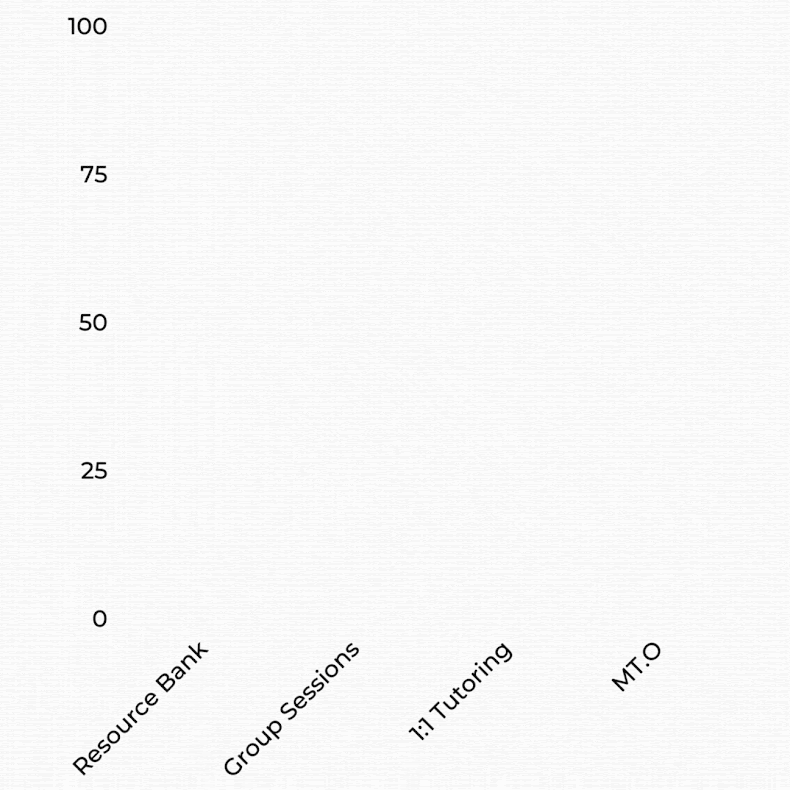
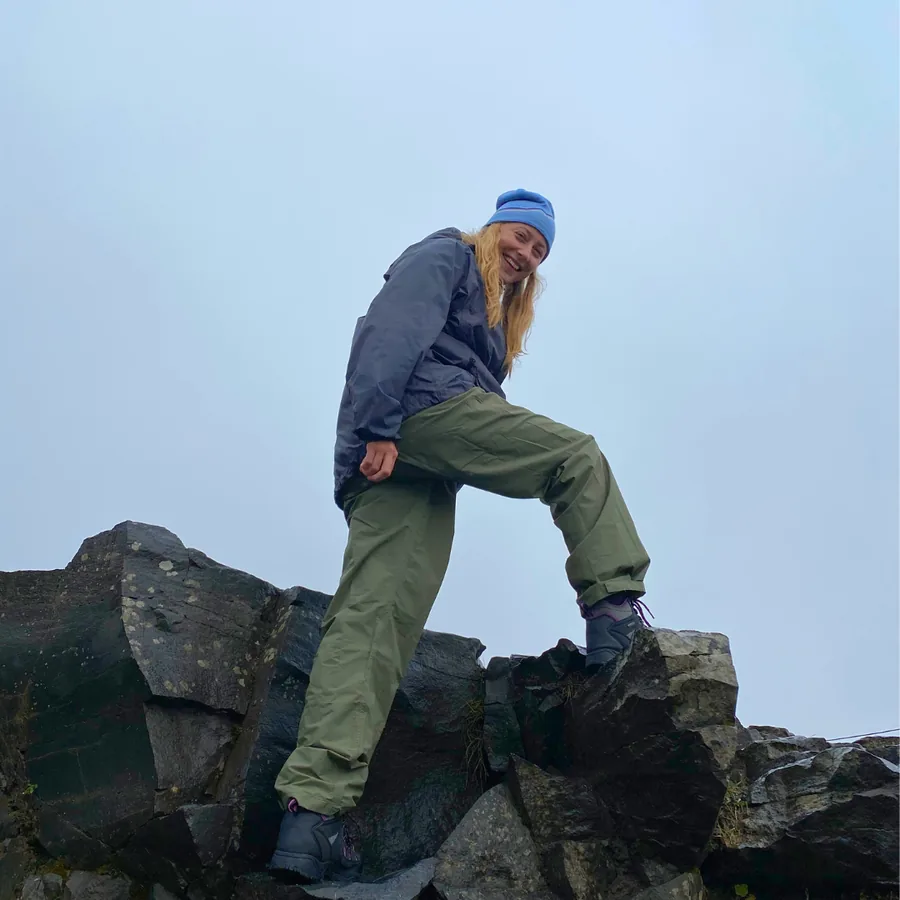
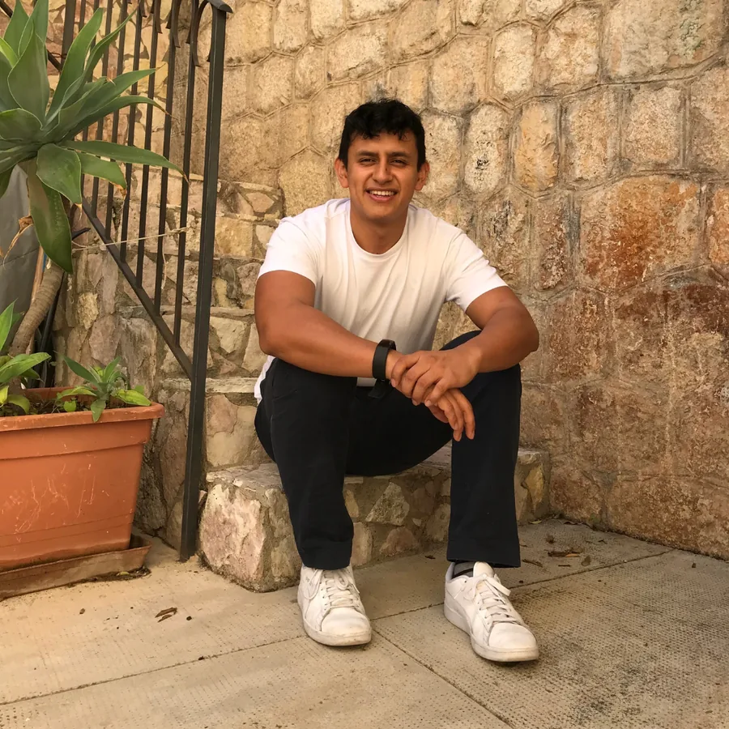
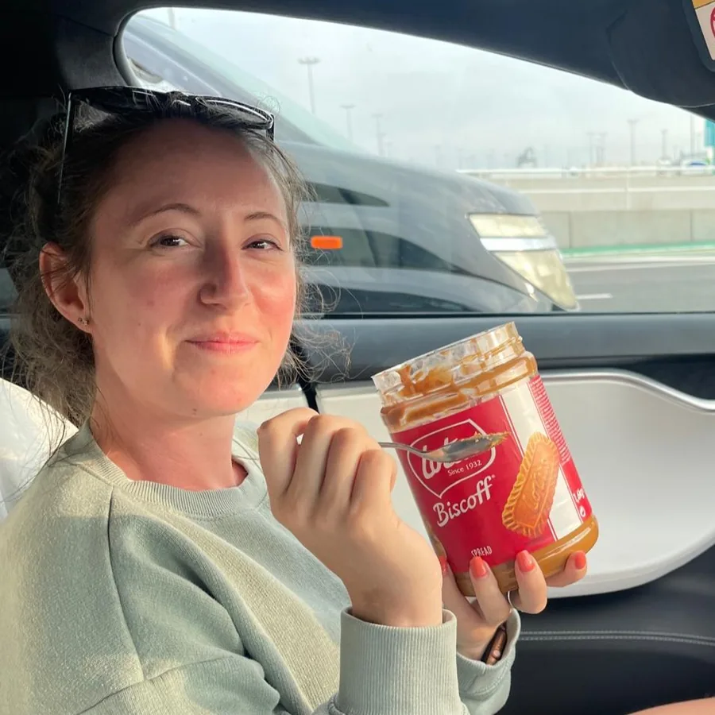

You've been paying for months. The grade hasn't moved.
The sessions happen, the invoices go out, everyone's polite about it. But the last report card looks a lot like the one before, and nobody can quite tell you why.
A roadmap built from a real diagnostic, taught by GCSE Maths specialists, with a marked past-paper exam every six weeks so you can see exactly what's moving. Our students average a 3.3 grade jump.
For parents of GCSE Maths students in Years 9, 10 and 11. Every exam board.
We'd rather lose you here than on week three. This works, but only for a particular kind of family, and it is not the cheap option.
These are the four things parents tell us on almost every call.
The sessions happen, the invoices go out, everyone's polite about it. But the last report card looks a lot like the one before, and nobody can quite tell you why.
Same explanations that didn't land the first time, delivered to a tired fourteen-year-old at six o'clock. If it wasn't working at nine in the morning, it isn't going to work now.
Each week the tutor asks what they're doing in class and teaches that. It feels responsive. It's actually just following the school's timetable at private-tuition prices.
"He's doing really well" is not data. Until the mock results land you're taking it on faith, and by then there isn't much time left to change course.
Nothing on the left is anyone behaving badly. It's just what happens when a service is sold by the hour: the hour is the product, so nobody is on the hook for where it ends up.
And the quieter one that parents mention afterwards: the subject stops taking up room in the house. No more Sunday-night dread, no more rows about revision, no more watching them shrink when someone asks how school's going.
Create my roadmapThree passes over every topic, because understanding something once isn't the same as being able to do it under exam conditions.
Proper understanding of the topic and of how the questions on it are actually built.
There's a direct link between the number of problems solved in practice and the grade at the end.
You can only teach what you fully understand. Explaining it back builds confidence and exposes anything still missing.
It depends on how far your child is from the grade they're aiming at, which is the first thing we work out on the call. It's a programme with a price, not an hourly rate — you'll know the full number, and exactly what it buys, before you decide anything.
What we can tell you now: we're not the cheap option, and parents who choose us usually do so having already spent a fair amount on tutoring that didn't move the grade.
Every six weeks your child sits genuine past-paper questions, marked against the real mark scheme. You get the paper back, the mark, and which topics moved. That's the whole point of the six-week cadence — you find out in week six, while there's still time to change something.
We add more sessions, at no extra cost, until they get there — and then keep going right up to exam day so they don't slip back. The target is agreed with you on the roadmap call and written down before you pay anything, so there's no ambiguity later about what we promised.
An in-house MathsTutors.Online tutor — not a freelancer from a marketplace. Every one holds a maths or closely related degree, and GCSE Maths is the only thing they teach. You can read about all of them further down this page.
Yes, and we teach a lot of students who do. The roadmap is built around what your child specifically is missing, and sessions are adapted to how they work best. Tell us about it on the call so we plan for it properly from the start.
All of them — AQA, Edexcel, OCR, WJEC/Eduqas and the IGCSE variants, and we teach to your child's specification.
To be straight with you: the practice questions themselves are drawn from across the boards rather than exclusively from theirs. The maths is identical, and seeing a topic asked three different ways is better preparation than drilling one board's phrasing.
It's online, and yes. It means your child is taught by a GCSE Maths specialist rather than whoever is willing to drive to your postcode, and everything written during a session is saved and revisitable rather than lost on a scrap of paper.
None. We tested it, it didn't improve results, so we stopped setting it.
Every session comes with more questions than anyone could get through in the time, so if your child wants extra practice it's already sitting there. But nothing is set, chased or marked between sessions.
All we need from your side is that your child can turn up: a reliable internet connection, a quiet space where they won't be interrupted, and someone at your end to handle the admin — the payments, and reading the results when they land.
If your child doesn't reach the target we agree together on your roadmap call, we'll add in more sessions to make sure they get there. Then we'll keep them there until exam day. All at no extra cost.
The target is set from their actual starting point, so it's realistic before anyone signs anything. Across every student we've taught, the average improvement is 3.3 grades.
Three students, in their own words, on video.
Marcus's grades slipped after a change of maths teacher. We found whole topics — histograms among them — that school had never covered with him. He finished on 100% in his final test.
Alfie wasn't keen when his mum suggested tutoring. He went from dreading maths to looking forward to the sessions. In his words: it's the same maths, just better.
Tshepi's school had written her off as a case who'd never get there. She arrived with real determination, and we pointed it at the right topics in the right order.
Unedited reviews and messages from parents and students, collected across Google, Trustpilot, email and our own feedback forms. Nothing here is written by us.
Loading reviews…
Scroll inside the panel to read more, or carry on down the page.

One-to-one private tuition is the most effective way to learn almost anything. It's also the most expensive, which is why most families can only afford it in thin slices — an hour here, an hour there, spread across two years.
We were founded to get those same results without that trade-off: specialist teaching, a proper plan, and enough structured practice to make it stick, at a fraction of what an equivalent amount of one-to-one would cost.
Every student's route is different. Some need very little explaining and a lot of practice; some are the other way round; some mostly need someone keeping them honest. The roadmap is what makes one system fit all of them.
In-house, degree-qualified, and GCSE Maths is all they teach. Most of them have their own story about being told they weren't a maths person.
BSc Mathematics — University of Plymouth
Studied maths with a focus on education and started tutoring in his first year. He's after the "ah-ha" moment, and he's fairly relentless about getting there.
Sporty, adventurous and always up for a challenge — bouldering, the gym and travelling, plus football and F1 if you want to talk about either.

BSc Mathematics — Keele University
Told at GCSE she'd never go further with maths, so she did it anyway, then qualified as a teacher and taught in secondary schools. She doesn't think maths has to be scary; she's here to help students believe that.
Reading, sport and travelling, with a long-standing crime fiction habit and a preference for team sports.
BSc Statistics — University College London
A problem-solver since his own school days and the UKMT challenges. His gift is taking a question that looks impossible and breaking it into pieces a student can actually see a way through.
Football and the gym, Bollywood films and Punjabi music, and travelling wherever he can — camels included.
MSc Astrophysics — Queen's University Belfast
An aspiring poet turned maths tutor. His GCSE teacher told him he was capable when he was sure he wasn't; he graduated top of his year, and now considers it his job to do the same for students in that position.
Produces and DJs his own jungle and drum & bass, plays chess, is learning to paint, and photographs galaxies with his own telescope.

BSc Mathematics — University of Bath
Came to maths via aerospace engineering at Bristol, so he's good on the "when would I ever use this" question. He's taught in several settings, including instructing taekwondo and kickboxing.
Endlessly active — gym, running, cycling, tennis, volleyball, bouldering — plus piano, programming and a serious interest in food.
The two people you'll speak to before anything starts.
BSc Physics — University of Bath
Scored 597/600 in A-Level Maths, against a 510 boundary for an A*. Over a decade of tutoring behind him, so there isn't much he hasn't seen a student struggle with.
Calisthenics, powerlifting, triathlon, basketball and snowboarding, plus music, art, programming and engineering. He'll find common ground with almost anyone.

BSc Mathematical Sciences — University of Bath
Invited to the UKMT's selective maths camp for scoring so highly — as one of the few girls there, one of the few state-school students, and the youngest in attendance.
Business, design, spreadsheets and helping people on one side; crochet, baking and making things on the other.
Tell us where your child is now and what you're aiming for. We'll map the route, tell you honestly how long it should take, and you can decide from there.
Create my roadmap